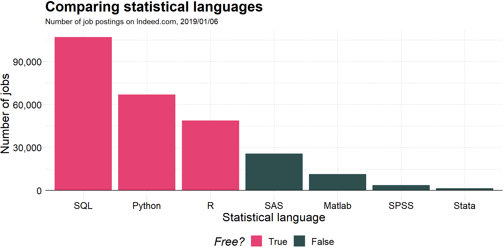
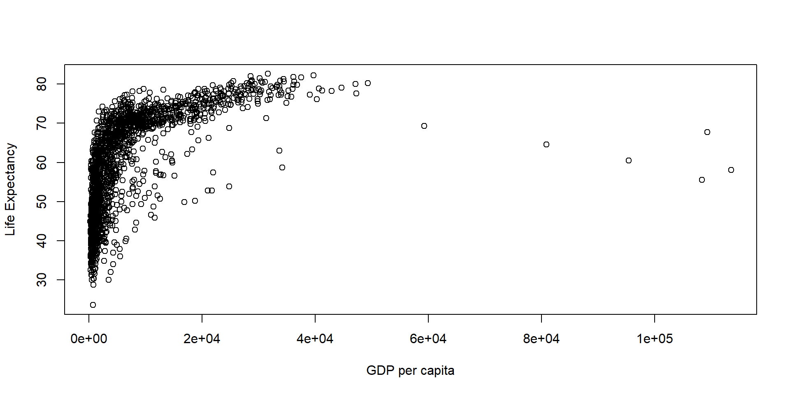
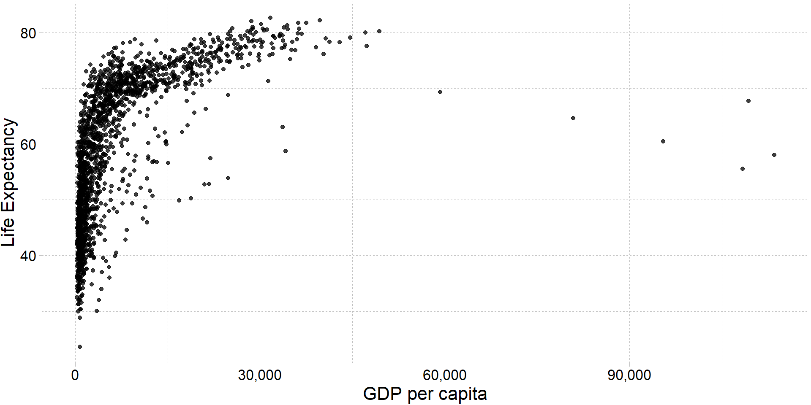
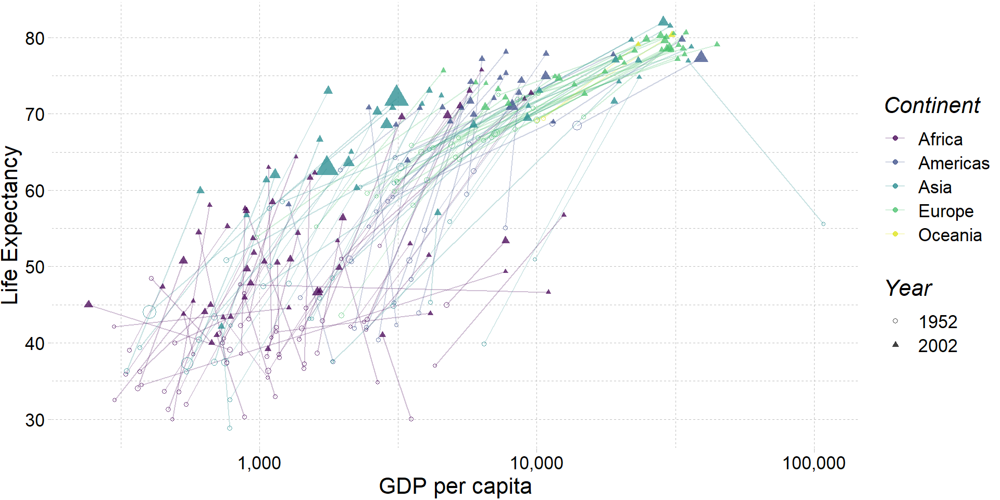

#|label: spurious
#| echo: false
tmp <- data.frame(
year = 1999:2009,
count = c(
9, 8, 11, 12, 11, 13, 12, 9, 9, 7, 9,
6, 5, 5, 10, 8, 14, 10, 4, 8, 5, 6
),
type = rep(c("letters", "deaths"), each = 11)
)
ggplot(data = tmp, aes(x = year, y = count, color = type)) +
geom_path() +
geom_point(size = 4) +
xlab("Year") +
ylab("Count") +
scale_color_manual(
"",
labels = c("Deaths from spiders", "Letters in the winning spelling bee word"),
values = c(red_pink, "darkslategray")
) +
theme_pander(base_size = 17) +
theme(legend.position = "bottom")01 - Вступ до економетрики
Економетрика
Ігор Мірошниченко
КНЕУ::ІІТЕ
2/6/23
Про мене
- Мірошниченко Ігор Вікторович
- кандидат економічних наук, доцент
- доцент кафедри математичного моделювання і статистики КНЕУ
- викладач Міжнародного інституту бізнесу (MBA)
miroshnychenko.ihor@kneu.edu.ua
Вступ
Чому економетрика?
Мотивація
Почнемо з кількох основних загальних питань:
Яка мета економетрики?
Чому економісти (або інші люди) вивчають або використовують економетрику?
Одна проста відповідь: дізнавайтеся про світ за допомогою даних.
дізнайтеся про світ = Ставте, відповідайте та обдумуйте запитання, теорії, припущення.
дані = множина даних.
Чому економетрика?
Приклад
Середній бал є результатом навичок (здібностей) і навчальних годин (вхідних даних). Отже, можна припустити модель
\[\text{GPA}=f(H, \text{SAT}, \text{PCT})\]
де \(H\) — це навчальні години, \(\text{SAT}\) — оцінка SAT, а \(\text{PCT}\) — відсоток занять, які відвідав студент. Ми очікуємо, що GPA зросте з кожною з цих змінних (\(H\), \(\text{SAT}\) і \(\text{PCT}\)).
Але кому потрібно очікати?
Ми можемо перевірити ці гіпотези використовуючи регресійну модель.
Чому економетрика?
Приклад, продовження
Регресійна модель:
\[ \text{GPA}_i = \beta_0 + \beta_1 H_i + \beta_2 \text{SAT}_i + \beta_3 \text{PCT}_i + \varepsilon_i \] Ми хочемо перевірити оцінку/перевірку взаємозв’язку \(\text{GPA}=f(H, \text{SAT}, \text{PCT})\).
(Огляд) Запитання
Q: Як ми інтерпретуємо \(\beta_1\)?
A: Додаткова година в класі корелює зі збільшенням середнього балу (з урахуванням SAT і PCT) на \(\beta_1\).
Q: Коефіцієнт \(\beta_k\) є параметрами генеральної сукупності чи вибірковою статистикою?
A: грецькі літери позначають параметри генеральної сукупності. Їхні оцінки отримують “кришки”, наприклад, \(\hat{\beta}_k\).
Q: Чи можемо ми інтерпретувати оцінки для \(\beta_2\) як причинно-наслідкові?
A: Не без додаткових припущень і/або знання процесу генерування даних.
Q: Що таке \(\varepsilon_i\)?
A: Випадкове відхилення/порушення студента від параметрів сукупності.
Q: Які припущення ми робимо під час оцінювання за допомогою OLS?
A:
- Зв’язок між GPA та пояснювальними змінними є лінійним за параметрами, і \(\varepsilon\) входить адитивно.
- Пояснювальними змінними є екзогенні, тобто, \(E[\varepsilon|X] = 0\).
- Ви також зазвичай припускаєте щось на кшталт:
\(E[\varepsilon_i] = 0\), \(E[\varepsilon_i^2] = \sigma^2\), \(E[\varepsilon_i \varepsilon_j] = 0\) для \(i \neq j\). - І (можливо) \(\varepsilon_i\) розподілено нормально.
Припущення
Наскільки вони важливі?
Ви дізналися, наскільки потужною та гнучкою може бути звичайна регресія за методом найменших квадратів (OLS).
Однак результати, які ви дізналися, вимагали припущень.
Реальне життя часто порушує ці припущення.
Питання: «що станеться, якщо ми порушимо ці припущення?» - Чи можемо ми знайти виправлення? (Окремо: як/коли \(\beta\) є причинним?) - Що станеться, якщо ми не застосуємо (або не зможемо) застосувати виправлення?
OLS все ще робить деякі дивовижні речі, але ви повинні знати, коли бути обережним, впевненим чи сумніватися.
Не все є причинним
Більше прикладів: Spurious Correlations
Економетрика
Прикладний економетрист1 потребує чіткого розуміння (принаймні) трьох сфер:
Теорія, що лежить в основі економетрики (припущення, результати, сильні та слабкі сторони).
Як застосувати теоретичні методи до фактичних даних.
Ефективні методи роботи з даними — очищення, агрегування, об’єднання, візуалізація.
Цей курс має на меті поглибити ваші знання в кожній із цих трьох областей.
- 1: Як і раніше.
- 2–3: R
R
R
Що таке R?
Щоб процитувати веб-сайт проекту R:
R — це безкоштовне програмне середовище для статистичних обчислень і графіки. Він компілюється та працює на різноманітних платформах UNIX, Windows і MacOS.
Що це означає?
R був створений для статистичної та графічної роботи, необхідної економетриці.
R має активну, процвітаючу онлайн-спільноту (stack overflow).
Крім того, вона безкоштовна і з відкритим кодом.
R
Чому ми використовуємо R?
1. R є безкоштовним і з відкритим кодом, що заощаджує 💰💵💰.
2. Пов’язане: За межами невеликої групи економістів, роботодавці приватного та державного секторів віддають перевагу R.
3. R є дуже гнучким і потужним — його можна адаптувати майже до будь-яких завдань, наприклад, «метрики, аналіз просторових даних, машинне навчання, веб-скраппінгу, очищення даних, створення веб-сайтів, навчання. Ця презентація такоє створена за допомогою R.
R
Чому ми використовуємо R?
4. Пов’язане: R не накладає немає обмежень на кількість ваших спостережень, змінних, пам’яті чи потужності обробки.
5. Якщо ви попрацюєте,1 ви отримаєте цінний і товарний інструмент.
6. Я 💖 R
R
R + приклади
R + Regression
Estimate Std. Error t value Pr(>|t|)
(Intercept) -17.579095 6.7584402 -2.601058 1.231882e-02
speed 3.932409 0.4155128 9.463990 1.489836e-12# A tibble: 2 × 5
term estimate std.error statistic p.value
<chr> <dbl> <dbl> <dbl> <dbl>
1 (Intercept) -17.6 6.76 -2.60 1.23e- 2
2 speed 3.93 0.416 9.46 1.49e-12R + Plotting (w/ plot)
R + Plotting (w/ plot)
R + Plotting (w/ ggplot2)
R + Plotting (w/ ggplot2)
R + More plotting (w/ ggplot2)
R + More plotting (w/ ggplot2)
# Load packages
library(gapminder)
library(dplyr)
# Create dataset
ggplot(
data = filter(gapminder, year %in% c(1952, 2002)),
aes(x = gdpPercap, y = lifeExp, color = continent, group = country)
) +
geom_path(alpha = 0.25) +
geom_point(aes(shape = as.character(year), size = pop), alpha = 0.75) +
scale_x_log10("GDP per capita", label = scales::comma) +
ylab("Life Expectancy") +
scale_shape_manual("Year", values = c(1, 17)) +
scale_color_viridis("Continent", discrete = T, end = 0.95) +
guides(size = F) +
theme_pander(base_size = 16)R + Animated plots (w/ gganimate)

Gapminder
R + Animated plots (w/ gganimate)
# The package for animating ggplot2
library(gganimate)
# As before
gg <- ggplot(
data = gapminder %>% filter(continent != "Oceania"),
aes(gdpPercap, lifeExp, size = pop, color = country)
) +
geom_point(alpha = 0.7, show.legend = FALSE) +
scale_colour_manual(values = country_colors) +
scale_size(range = c(2, 12)) +
scale_x_log10("GDP per capita", label = scales::comma) +
facet_wrap(~continent) +
theme_pander(base_size = 16) +
theme(panel.border = element_rect(color = "grey90", fill = NA)) +
# Here comes the gganimate-specific bits
labs(title = "Year: {frame_time}") +
ylab("Life Expectancy") +
transition_time(year) +
ease_aes("linear")
# Save the animation
anim_save(
animation = gg,
filename = "ex_gganimate.mp4",
path = dir_slides,
width = 10.5,
height = 7,
units = "in",
res = 150,
nframes = 56
)R + Maps
Вступ до R
Початок роботи
Втановлення
Ресурси
Безкоштовно(-ні)
- Google (що неминуче призводить до StackOverflow)
- R for Data Science (2e)
Платні:
Деякі основи R
Ви зануритеся глибше в R на лабораторних роботах, але тут шість важливих моментів про R:
Все є об’єктом.
Кожен об’єкт має ім’я і значення.
Ви використовуєте функції до цих об’єктів.
Функції містяться в бібліотеках (пакетах)
R спробує допомогти вам.
R має свої примхи.
foo
foo <- 2
mean(foo)
library(dplyr)
?dplyr
NA; error; warning